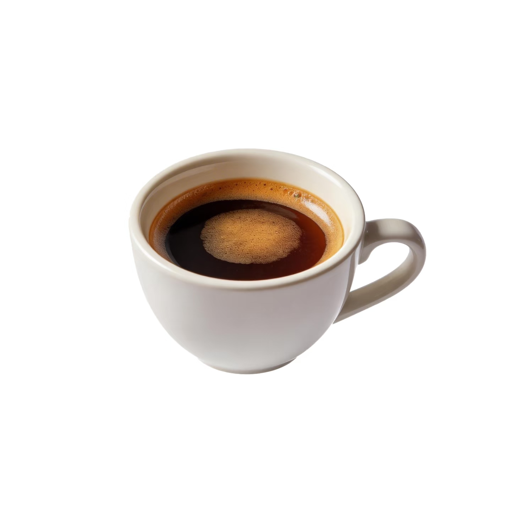

美式咖啡 Americano
← 返回首页
饮品简介
美式咖啡起源于二战时期，美军士兵不习惯欧洲浓缩咖啡的浓烈口感，于是加水稀释，由此诞生了美式咖啡。标准配比为1份浓缩咖啡+3~5份热水，是黑咖啡爱好者的经典选择。
风味特点
酸度柔和、苦味偏低，保留咖啡豆本身的香气，无牛奶干扰，口感干净清爽。适合搭配早餐或需要提神的工作时段，也是减脂人群的首选咖啡。
家庭制作方法
- 准备30ml浓缩咖啡（可用胶囊机或手冲替代）
- 烧一壶90℃的纯净水
- 杯中先倒入200ml热水，再加入浓缩咖啡
- 轻轻搅拌均匀，即可饮用（可加冰做成冰美式）
饮用小贴士
💡 美式咖啡最佳饮用温度为60-65℃，过热会掩盖风味，过冷会增加酸度
💡 选择浅/中度烘焙的阿拉比卡豆，风味更明亮，酸苦平衡更好
💡 避免长时间保温，最佳饮用时间为制作后30分钟内